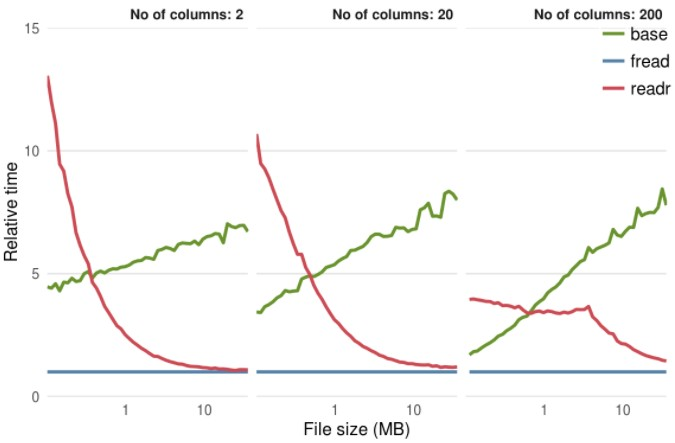

1.5 Data Import
1.5.1 Data Import Performance
There are multiple ways to import data into R, most common ones are discussed here:
- Base read.table
- data.table::fread
- readr::read_csv
1.5.1.1 Comparison
Below comparison charts shows reading performance relative to data.table::fread:
- Base read.table is more than 5x slower on large files
- readr performance is acceptable, and improving closer to fread at larger data file

Source
1.5.2 What To Choose
Few criterias must be considered when choosing the right import:
Performance
- fread is very high speed, follow by readr
- read.table is slow, and not suitable for large datasets
Parsing Detection
- fread autmatically detect header
- fread autmatically detect column delimeter and decimal
- readr auto parse date/time format if data in format “yyyy-mm-dd”
Factor Conversion
- fread and read.table both has stringAsFactor=TRUE option for auto conver string to factor
- In readr, need to manually specify which column to convert to factor, and all the factor levels values required definition upfront (downside)
Progress Bar
- fread and readr provides progress info when the loading is going to take a while
Other Features
- readr is part of tidyverse ecosystem, readr returns tibble and datafrma eobject
- fread has advance data manipulation functions at high speed, fread return data.table and data.frame object
1.5.3 Working Directory
Before importing data into R, we must first check the current working directory, so that we can specify the relative path for the files we want to import.
To display the current working directory.
getwd()
## [1] "C:/Users/YKS-NIC/Dropbox/R/business_technical_analytics_r"To set the working directory, use below:
setwd("...new path...)1.5.4 Sample Data File
We use sample data from excel, exported to CSV.
Following importing method shows the process of Excel–>csv–>R data.frame.
1.5.4.1 Original Excel Data Source
Check out the Yellow areas in codes below !
1.5.4.2 Exported CSV File from Excel
,,dept,gender,weight,height,date_birth,amount,date_last,date first
1,ID101,D1,Male,35,173,1/7/1973,100,2/29/2016,2013-07-31
2,ID102,D2,Female,37.1,164,28/2/1980,121,4/1/2017,2013-08-31
3,ID103,D3,Female,43.12,178,31/12/1978,152,10/31/2015,2014-12-31
4,ID104,D1,Male,38.123,182,12/1/1997,133,11/1/2016,2015-02-28
5,ID105,D1,Male,54.1234,159,2/1/1982,143,9/30/2016,2012-06-15
6,ID106,D3,Female,34.12345,166,26/7/1973,155,11/27/2015,2013-04-28
7,ID107,D2,Male,49.123456,153,21/8/1985,117,3/31/2017,2014-03-01
8,ID108,D1,Male,50.2,159,2/1/1982,143,9/30/2016,2011-06-15
9,ID109,D3,Female,59.1,166,13/7/1975,155,11/1/2017,2012-04-02
10,ID110,D2,Male,63.2,163,24/8/1982,117,3/12/2016,2013-03-12
11,ID111,D3,Female,75.1,170,9/8/1979,135,2/1/2015,
12,ID112,D2,Male,52.1,169,NULL,128,NA,
13,ID113,D3,NULL,88.8,171,NULL,141,NA,
### Importing CSV1.5.5 Base::read.csv
read.csv is a similar to read.table but with some defaults value set as below for convenience of CSV import.
In the resulting data.frame, row.names attribute are automatically assigned with sequence number starting from 1.
read.csv ( file,
\(\quad\) header = TRUE - contain header row
\(\quad\) sep = “,” - column seperator marked as ‘,’
\(\quad\) dec = “.” - decimals marked as ‘.’
\(\quad\) na.strings = “NA” - vectors that define missing data marking
\(\quad\) check.names = TRUE - col names with white space replaced with ‘.’
\(\quad\) stringsAsFactors = TRUE - convert string to factor
As an exmple, the import below:
- Specified multiple string elements that represents missing data in the CSV file
- Set stirngsAsFactors=FALSE so that all string columns are not converted to factor automatically, on other words, they are imported as character
- ./ is a relative path represents current R working directory. It can be replaced with complete non-relative path
- Default parameter check.names=TRUE automatically named ‘unnamed’ column, as well as replacing white spaces for column names with ‘.’
sample.df <- read.csv ("./datasets/import_sample.csv",
stringsAsFactors = FALSE,
na.strings=c('NA','NULL',''),
encoding="UTF-8")
sample.df [,-10]## X X.1 dept gender weight height date_birth amount date_last
## 1 1 ID101 D1 Male 35.00000 173 1/7/1973 100 2/29/2016
## 2 2 ID102 D2 Female 37.10000 164 28/2/1980 121 4/1/2017
## 3 3 ID103 D3 Female 43.12000 178 31/12/1978 152 10/31/2015
## 4 4 ID104 D1 Male 38.12300 182 12/1/1997 133 11/1/2016
## 5 5 ID105 D1 Male 54.12340 159 2/1/1982 143 9/30/2016
## 6 6 ID106 D3 Female 34.12345 166 26/7/1973 155 11/27/2015
## 7 7 ID107 D2 Male 49.12346 153 21/8/1985 117 3/31/2017
## 8 8 ID108 D1 Male 50.20000 159 2/1/1982 143 9/30/2016
## 9 9 ID109 D3 Female 59.10000 166 13/7/1975 155 11/1/2017
## 10 10 ID110 D2 Male 63.20000 163 24/8/1982 117 3/12/2016
## 11 11 ID111 D3 Female 75.10000 170 9/8/1979 135 2/1/2015
## 12 12 ID112 D2 Male 52.10000 169 <NA> 128 <NA>
## 13 13 ID113 D3 <NA> 88.80000 171 <NA> 141 <NA>str(sample.df)
## 'data.frame': 13 obs. of 10 variables:
## $ X : int 1 2 3 4 5 6 7 8 9 10 ...
## $ X.1 : chr "ID101" "ID102" "ID103" "ID104" ...
## $ dept : chr "D1" "D2" "D3" "D1" ...
## $ gender : chr "Male" "Female" "Female" "Male" ...
## $ weight : num 35 37.1 43.1 38.1 54.1 ...
## $ height : int 173 164 178 182 159 166 153 159 166 163 ...
## $ date_birth: chr "1/7/1973" "28/2/1980" "31/12/1978" "12/1/1997" ...
## $ amount : int 100 121 152 133 143 155 117 143 155 117 ...
## $ date_last : chr "2/29/2016" "4/1/2017" "10/31/2015" "11/1/2016" ...
## $ date.first: chr "2013-07-31" "2013-08-31" "2014-12-31" "2015-02-28" ...1.5.6 data.table::fread
fread ( input,
\(\quad\) header = ‘auto’ - auto detect header (if all non empty cells in first row character)
\(\quad\) sep = “auto” - auto detect column seperator
\(\quad\) dec = if (sep!=“.”) “.” else “,”, in a way automatic selected
\(\quad\) na.strings = “NA” - vectors that define missing data marking
\(\quad\) check.names = FALSE - do not replace col names with white space with ‘.’
\(\quad\) stringsAsFactors = FALSE - do not convert string to factor
\(\quad\) nrows = -1 - how many rows to read, default -1 means read all rows
\(\quad\) data.table = TRUE - return data.table object, FALSE - return data.frame object
library(data.table)
my.dt = fread("./datasets/import_sample.csv",
stringsAsFactors = TRUE,
na.strings=c('NA','NULL',''),
check.names = TRUE,
data.table = FALSE)
my.dt[,-10]## V1 V2 dept gender weight height date_birth amount date_last
## 1 1 ID101 D1 Male 35.00000 173 1/7/1973 100 2/29/2016
## 2 2 ID102 D2 Female 37.10000 164 28/2/1980 121 4/1/2017
## 3 3 ID103 D3 Female 43.12000 178 31/12/1978 152 10/31/2015
## 4 4 ID104 D1 Male 38.12300 182 12/1/1997 133 11/1/2016
## 5 5 ID105 D1 Male 54.12340 159 2/1/1982 143 9/30/2016
## 6 6 ID106 D3 Female 34.12345 166 26/7/1973 155 11/27/2015
## 7 7 ID107 D2 Male 49.12346 153 21/8/1985 117 3/31/2017
## 8 8 ID108 D1 Male 50.20000 159 2/1/1982 143 9/30/2016
## 9 9 ID109 D3 Female 59.10000 166 13/7/1975 155 11/1/2017
## 10 10 ID110 D2 Male 63.20000 163 24/8/1982 117 3/12/2016
## 11 11 ID111 D3 Female 75.10000 170 9/8/1979 135 2/1/2015
## 12 12 ID112 D2 Male 52.10000 169 <NA> 128 <NA>
## 13 13 ID113 D3 <NA> 88.80000 171 <NA> 141 <NA>str(my.dt)## 'data.frame': 13 obs. of 10 variables:
## $ V1 : int 1 2 3 4 5 6 7 8 9 10 ...
## $ V2 : Factor w/ 13 levels "ID101","ID102",..: 1 2 3 4 5 6 7 8 9 10 ...
## $ dept : Factor w/ 3 levels "D1","D2","D3": 1 2 3 1 1 3 2 1 3 2 ...
## $ gender : Factor w/ 2 levels "Female","Male": 2 1 1 2 2 1 2 2 1 2 ...
## $ weight : num 35 37.1 43.1 38.1 54.1 ...
## $ height : int 173 164 178 182 159 166 153 159 166 163 ...
## $ date_birth: Factor w/ 10 levels "1/7/1973","12/1/1997",..: 1 8 9 2 4 7 5 4 3 6 ...
## $ amount : int 100 121 152 133 143 155 117 143 155 117 ...
## $ date_last : Factor w/ 10 levels "10/31/2015","11/1/2016",..: 6 9 1 2 10 4 8 10 3 7 ...
## $ date.first: Factor w/ 10 levels "2011-06-15","2012-04-02",..: 6 7 9 10 3 5 8 1 2 4 ...1.5.7 readr::read_csv
- read_csv returns object type: ‘tbl_df’, ‘tbl’ and ‘data.frame’
read_csv ( file,
\(\quad\) col_names = TRUE - first row is header, if FALSE or char vector to specify column names
\(\quad\) col_types = NULL - all columns type will be imputed based on first 100 rows, alternatively specify:
\(\quad\) \(\quad\) list( Sepal.Length = col_double(), …) \(\quad\) na = c(“”, “NA”) - characters used for detecting missing data
\(\quad\) skip = 0 - no skipping for first number of rows
\(\quad\) n_max = Inf - how many rows to read, default read all
library(readr)
my.rd = read_csv("./datasets/import_sample.csv",
na = c('NA','NULL',''),
col_types = list (
gender=col_factor(c('Male','Female'))
))## Warning: Missing column names filled in: 'X1' [1], 'X2' [2]my.rd[,-10]## # A tibble: 13 x 9
## X1 X2 dept gender weight height date_birth amount date_last
## <int> <chr> <chr> <fctr> <dbl> <int> <chr> <int> <chr>
## 1 1 ID101 D1 Male 35.00000 173 1/7/1973 100 2/29/2016
## 2 2 ID102 D2 Female 37.10000 164 28/2/1980 121 4/1/2017
## 3 3 ID103 D3 Female 43.12000 178 31/12/1978 152 10/31/2015
## 4 4 ID104 D1 Male 38.12300 182 12/1/1997 133 11/1/2016
## 5 5 ID105 D1 Male 54.12340 159 2/1/1982 143 9/30/2016
## 6 6 ID106 D3 Female 34.12345 166 26/7/1973 155 11/27/2015
## 7 7 ID107 D2 Male 49.12346 153 21/8/1985 117 3/31/2017
## 8 8 ID108 D1 Male 50.20000 159 2/1/1982 143 9/30/2016
## 9 9 ID109 D3 Female 59.10000 166 13/7/1975 155 11/1/2017
## 10 10 ID110 D2 Male 63.20000 163 24/8/1982 117 3/12/2016
## 11 11 ID111 D3 Female 75.10000 170 9/8/1979 135 2/1/2015
## 12 12 ID112 D2 Male 52.10000 169 <NA> 128 <NA>
## 13 13 ID113 D3 NA 88.80000 171 <NA> 141 <NA>str(my.rd)## Classes 'tbl_df', 'tbl' and 'data.frame': 13 obs. of 10 variables:
## $ X1 : int 1 2 3 4 5 6 7 8 9 10 ...
## $ X2 : chr "ID101" "ID102" "ID103" "ID104" ...
## $ dept : chr "D1" "D2" "D3" "D1" ...
## $ gender : Factor w/ 2 levels "Male","Female": 1 2 2 1 1 2 1 1 2 1 ...
## $ weight : num 35 37.1 43.1 38.1 54.1 ...
## $ height : int 173 164 178 182 159 166 153 159 166 163 ...
## $ date_birth: chr "1/7/1973" "28/2/1980" "31/12/1978" "12/1/1997" ...
## $ amount : int 100 121 152 133 143 155 117 143 155 117 ...
## $ date_last : chr "2/29/2016" "4/1/2017" "10/31/2015" "11/1/2016" ...
## $ date first: Date, format: "2013-07-31" "2013-08-31" ...
## - attr(*, "spec")=List of 2
## ..$ cols :List of 10
## .. ..$ X1 : list()
## .. .. ..- attr(*, "class")= chr "collector_integer" "collector"
## .. ..$ X2 : list()
## .. .. ..- attr(*, "class")= chr "collector_character" "collector"
## .. ..$ dept : list()
## .. .. ..- attr(*, "class")= chr "collector_character" "collector"
## .. ..$ gender :List of 3
## .. .. ..$ levels : chr "Male" "Female"
## .. .. ..$ ordered : logi FALSE
## .. .. ..$ include_na: logi FALSE
## .. .. ..- attr(*, "class")= chr "collector_factor" "collector"
## .. ..$ weight : list()
## .. .. ..- attr(*, "class")= chr "collector_double" "collector"
## .. ..$ height : list()
## .. .. ..- attr(*, "class")= chr "collector_integer" "collector"
## .. ..$ date_birth: list()
## .. .. ..- attr(*, "class")= chr "collector_character" "collector"
## .. ..$ amount : list()
## .. .. ..- attr(*, "class")= chr "collector_integer" "collector"
## .. ..$ date_last : list()
## .. .. ..- attr(*, "class")= chr "collector_character" "collector"
## .. ..$ date first:List of 1
## .. .. ..$ format: chr ""
## .. .. ..- attr(*, "class")= chr "collector_date" "collector"
## ..$ default: list()
## .. ..- attr(*, "class")= chr "collector_guess" "collector"
## ..- attr(*, "class")= chr "col_spec"